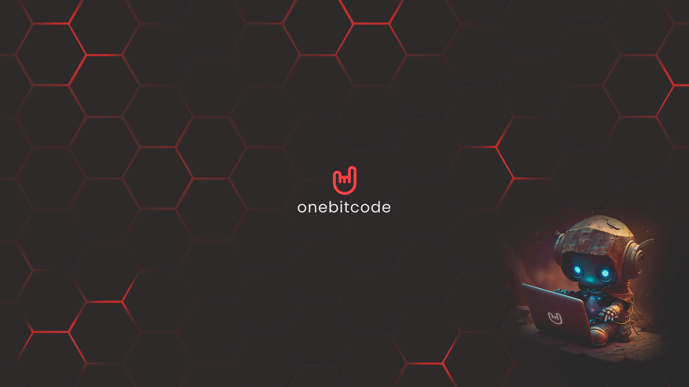
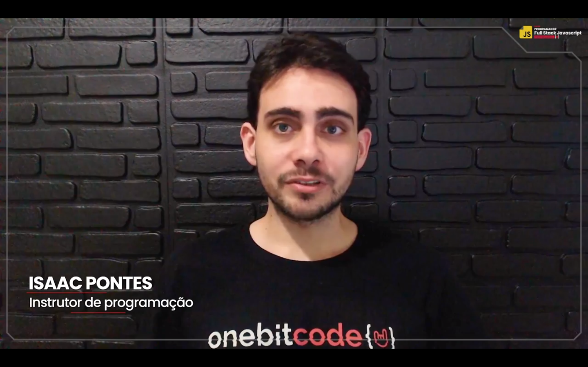

A OBC, mais conhecida como One Bit Code, é uma empresa com o foco na área
de programação, que vem desenvolvendo um papel bastante importante na vida
daquela pessoa que tem interesse pela área. Com mais de 15 mil alunos matriculados,
a OBC vem desempenhando um papel bastante importante, com diferentes formações
profissionais de alto nível, desde cursos para programadores front-end, até pacotes Full-Stack.

Informações do Entrevistado

Me chamo Isaac, sou bacharel em Sistemas de Informação e atuo profissionalmente
com tecnologia há quase 10 anos. Também sou formado como técnico em informática
Hoje atuo como instrutor e CTO na OneBitCode.
Conhecido como Chief Technology Officer, que em português significa Diretor(a)
de Tecnologia/ Gerente de Tecnologia, conhecido originalmente como CTO
esse cargo representa o diretor-chefe da área de tecnologia de uma empresa
sendo o 1.º na área de TI, ocupando a posição do nível executivo.
"A dúvida é o princípio da sabedoria."
Perguntas e Respostas
Comecei através do curso técnico em informática e trabalhando de forma independente,
tanto na parte de infraestrutura e suporte como na área de programação.
Como vim de uma cidade pequena, não tinha muitas oportunidades em empresas,
então atuei bastante por conta própria. Depois de alguns anos surgiu a oportunidade de trabalhar remotamente,
e foi assim que cheguei à minha situação atual.
Desde criança sempre fui muito atraído pela área de tecnologia, especialmente de jogos eletrônicos.
Ao conhecer mais da área de programação através do curso técnico optei por fazer uma faculdade nessa área.
Como freelancer.
Sim. Nos meus primeiros projetos como freelancer eu ficava bastante inseguro por
nunca ter tido tanto contato com profissionais mais experientes. Mas eu não tinha
muita escolha, então fazia assim mesmo.
Sim. É importante estar sempre se atualizando. Além disso, eu sou o tipo de pessoa
que não consegue ficar fazendo a mesma coisa por muito tempo, gosto da mudança.
Não exatamente, mas é bem semelhante.
Sim
Gosto da ideia de atuar em projetos maiores no futuro, com um grande impacto social.
Além disso, tenho intenção de eventualmente atuar na área de jogos eletrônicos, que
foi o que me motivou a ingressar na área de tecnologia inicialmente.
Eu diria para não se desanimar com as dificuldades e treinar o máximo que puder.
Não é uma área fácil, mas é bem recompensadora. Nesse ponto, dá para dizer que
"não é para qualquer um", mas não porque você precisa de talento ou ser super
inteligente, isso é mito. A verdade é que muitos desistem ou não se esforçam o
suficiente. Também não devemos criar expectativas erradas. Você não precisa ser o
próximo Bill Gates ou Steve Jobs (e estatisticamente falando, provavelmente não
será), mas isso não significa que não irá conseguir. Os primeiros passos são os mais
difíceis e os mais importantes, então é preciso treinar bastante, estudar, praticar
sozinho, buscar ajuda, fazer simulações de projetos reais e tudo mais que estiver ao
alcance. Com tempo, dedicação e a instrução correta, qualquer um consegue ser um programador.
 Privacidade e Termos de Serviços
Privacidade e Termos de Serviços  Instagram OBC
Instagram OBC  Canal Youtube OBC
Canal Youtube OBC